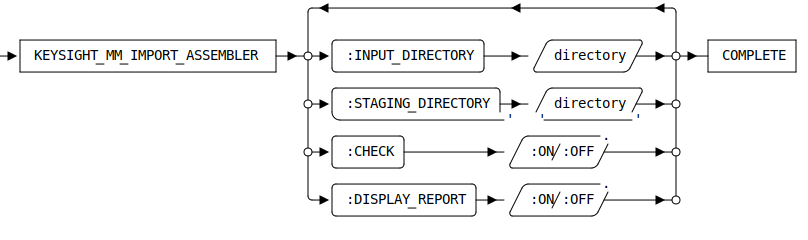

KEYSIGHT_MM_IMPORT_ASSEMBLER [Public Dialog]
Package: keysight-migrator (Nick name(s): :kym)
Prepare Modeling 2d and 3d models for ModelManager check-in.
This dialog can be activated by:
- Selecting the command Prepare MM Import in the Keysight Migrator group of the Modeling ribbon (see also The Extension Module User Interface
- Typing
KEYSIGHT_MM_IMPORT_ASSEMBLERinto the Modeling command line.
Syntax

Options
:INPUT_DIRECTORY- The input directory containing 2d Annotation and MI drawings as well as 3d models of any format supported by Modeling. The sub structure is up to the user but it is recommended to keep related files together.
:STAGING_DIRECTORY- The models in native Modeling format (.sd*). Filenames are component sysids to guarantee uniqueness.
:CHECK- Option to run a part check to all parts.
DISPLAY_REPORT-
Show a report when import is finished.